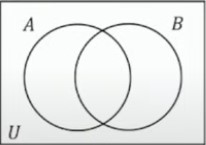
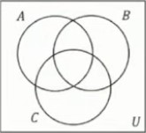

Set
เซต
แบบแจกแจงสมาชิก
- \(A\) เป็นเซตของจำนวนนับที่ไม่เกิน 5 \(\rightarrow A = \{1,2,3,4,5\}\)
- \(A\) เป็นเซตของชื่อวันในแต่ละสัปดาห์
- \(A = \{\)อาทิตย์, จันทร์, อังคาร, พุธ, พฤหัสบดี, ศุกร์, เสาร์\(\}\)
แบบบอกเงื่อนไขสมาชิก
- \(A = \{x|x\) เป็นจำนวนนับและ \(x \ge 5\}\)
- \(G = \{x | 0 \le x \le 1\}\)
สมาชิก และ ซับเซต
- ให้ \(A = \{1,2,2,3,2\}\)
- \(1 \in A \rightarrow 1\) เป็นสมาชิกของเซต \(A\)
- \(\{1\} \subset A \rightarrow \{1\}\) เป็น subset ของเซต \(A\)
- \(n(A) = 3 \rightarrow\) จำนวนสมาชิกของเซต \(A\) เท่ากับ 3 (ซ้ำไม่นับ)
เซตว่าง
- Null set, empty set
- \(\emptyset, \{\}\)
- \(n(\emptyset) = 0\)
- ถือว่าเป็นเซตจำกัดเพราะหาจำนวนสมาชิกได้
เซตจำกัด และ เซตอนันต์
- เซตจำกัด (finite set) หาจำนวนสมาชิกได้
- เซตอนันต์ (infinite set) จำนวนสมาชิกมากจนนับไม่ถ้วน
- \(F\) แทนเซตของจำนวนเต็มที่น้อยกว่า 2 \(\rightarrow F = \{1,0,-1,-2,-3,\ldots\}\)
- \(G\) แทนเซตของจำนวนใดๆตั้งแต่ 0 ถึง 1
เอกภพสัมพัทธ์ (relative universe) \(\mathcal U\)
- ขอบเขตของสิ่งที่พิจารณา เช่น
- \( \mathbb R\) จำนวนจริง, \( \mathbb N\) จำนวนนับ, \( \mathbb Z\) จำนวนเต็ม, \( \mathbb Q\) จำนวนตรรกยะ, \( \mathbb Q'\) จำนวนอตรรกยะ
เซตที่เท่ากัน
- \(A = B\)
- จำนวนสมาชิกต้องเท่ากัน สมาชิกเหมือนกัน คือเป็นเซตเดียวกันนั่นเอง
สับเซต
- \(A \subset B\)
- ก็ต่อเมื่อสมาชิกทุกตัวของเซต \(A\) เป็นสมาชิกของเซต \(B\)
- \(\emptyset\) เป็นสับเซตของเซตทุกเซต
- \(A \subset A\)
พาวเวอร์เซต (power set)
- \(P(A)\) เซตของสับเซตทั้งหมดของเซต \(A\)
- \(n(P(A)) = {2^n}^{(A)}\)
- \(A = \{1,2\}\)
- \(P(A) = \{\emptyset, \{1\}, \{2\}, \{1,2\}\}\)
- \(n(P(A)) = 2^2 = 4\)
- \(D = \emptyset, P(D) = \{\emptyset\}\)
แผนภาพเวนน์ (Venn diagram)
การดำเนินการระหว่างเซต
Intersection
- A ∩ B = {x | x ∈ A และ x ∈ B}
Union
- A ∪ B = {x | x ∈ A หรือ x ∈ B}
Complement
- A' = {x | x ∈ U และ x ∉ A}
Difference
- A - B = {x | x ∈ A และ x ∉ B}
สมบัติการดำเนินการระหว่างเซต
- A ∪ B = B ∪ A
- A ∩ B = B ∩ A
- (A ∪ B) ∪ C = A ∪ (B ∪ C) = A ∪ B ∪ C
- (A ∩ B) ∩ C = A ∩ (B ∩ C) = A ∩ B ∩ C
- A ∪ (B ∩ C) = (A ∪ B) ∩ (A ∪ C)
- A ∩ (B ∪ C) = (A ∩ B) ∪ (A ∩ C)
- (A ∪ B)' = A' ∩ B'
- (A ∩ B)' = A' ∪ B'
- A - B = A ∩ B'
- A' = U - A
การแก้ปัญหาโดยใช้เซต
- n(A ∪ B) = n(A) + n(B) - n(A ∩ B)
- 
- n(A ∪ B ∪ C) = n(A) + n(B) + n(C) - n(A ∩ B) - n(A ∩ C) - n(B ∩ C) + n(A ∩ B ∩ C)
- 
ตัวอย่าง